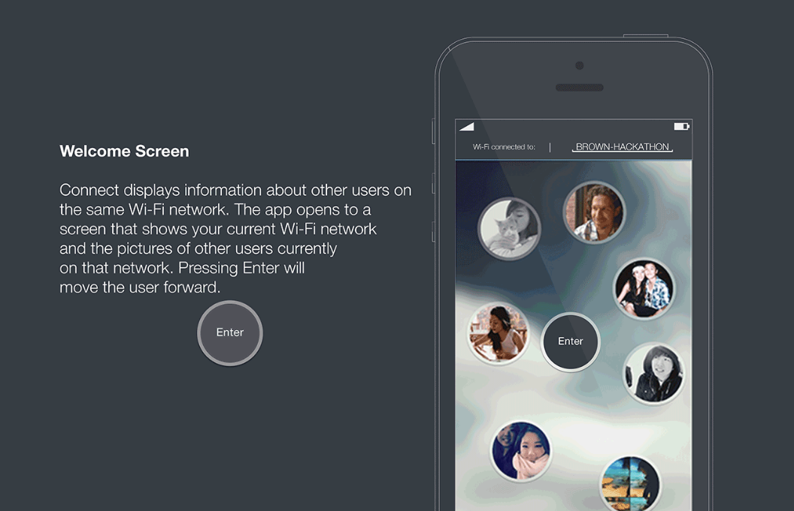
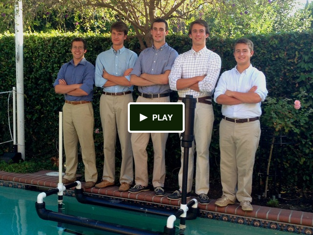
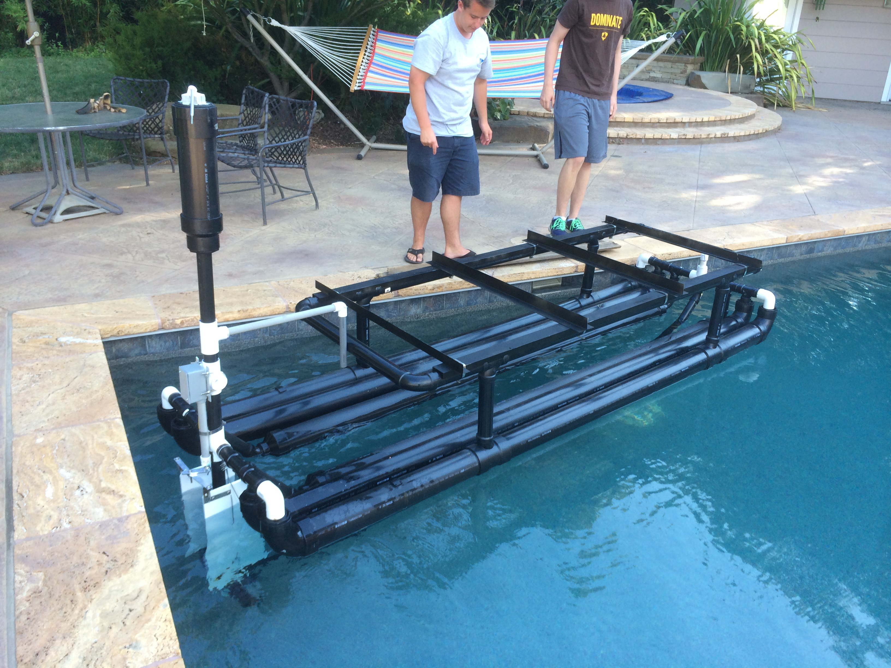
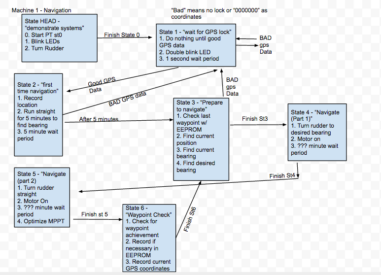
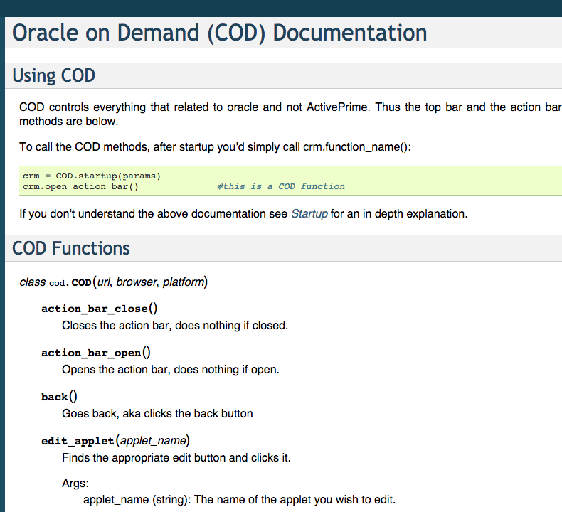
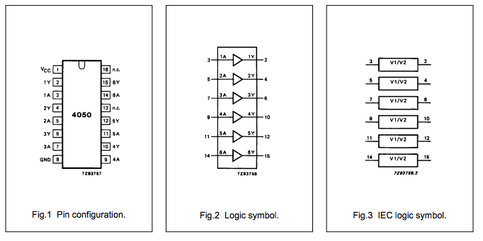

Sean Smith
Projects
All the cool stuff that I'm working on:
Sea Rover
An autonomous crowd-funded seafaring vessel.
Bitcoin Sentiment
An algorithm to predict bitcoin value based on online sentiment.
Connect App
An app that enables realtime networking face to face.
Ready Table
A web app that sends a text when your table is ready.
Thinker Craft
An autonomous indoor quadcopter that intelligently adapts to new environments.
Automated Testing API
I spent the summer creating an easy way for ActivePrime to test their product.
Key Card door lock
I hacked together a way to get into my dorm with just my student id.
BitcoinSentiment
Abstract
This is a HackMIT 2014 project. Source code can be found here. The scraping and sentiment analysis was written in python and it was graphed using pyplot.
We're trying to predict bitcoin values based on sentiment on online communities. Our initial hypothesis is that based on good or bad news in online forums, bitcoin prices rise and fall. So by looking at existing data we are trying to find a correlation.
We were inspired by the work of Peter Gloor and Jermain Kaminski on how twitter posts effect bitcoin value.
Methodology
We Used the Idol On Demand api from HP to determine aggregate sentiment. The sentiment is a value between -1 and 1, 1 being "I LOVE BITCOIN" to -1 being "SELL YOUR BITCOIN NOW". Each post over the historical data was summed to get a daily correct value. Our data was taken from the reddit bitcoin community.
The historical bitcoin prices were retrieved from the coinbase API:
Results
The initial data is messy. When compared to the graph of bitcoin value, a clear correlation is not evident.


So we Cleaned up the data by applying a filter:

When this data is overlaid with the bitcoin price data, a clear trend is exposed:

Data
Feel free to use our data. There are two text files that have json data dumped straight in them. Or you can use the csv file if you'd like an easier file format. Please attribute your work to this github repo.
Connect
Connect is an iOS app that facilitates quick networking with the people around you. It is designed with first encounters at conventions, business meetings, hackathons, or similar gatherings in mind. The app displays a list of users on the same Wi-Fi network, complete with a picture and a list of interests for each user. Need to find graphic designer at a hackathon, or cardiologist at a medical conference? Connect has you covered. Just want to find someone in the room who shares your interests? Connect makes that easy, too.
Thanks to our excellent designer Tommy Park we have beautiful slides. But fear not the code exists on github here.

Sea Rover

Sea Rover is an autonomous boat that's designed to navigate open ocean for months at a time. I worked on both the engineering and the software development side of the project. We started building a prototype and were soon out of money so we set up a kickstarter. The kickstarter raised in excess of 2,000$ so we spent the summer designing and building the boat.
The kickstarter video shows an early prototype of the boat. I'm behind the camera for those of you wondering.
Frame
The Hull We are using PVC and ABS plastics to construct a simple, rugged frame. This material choice makes the design process flexible and assembly a breeze—especially since so many plumbing parts are available at the local home improvement store. We decided on a pontoon design for its simplicity and stability. On top of two large pontoons rests the frame for our electronics and other hardware—simple and robust. Below the pontoons a keel filled with concrete and corrugated plastic sheeting keep the boat upright and traveling in a straight line. As a precaution against unforeseen accidents, where the hull could crack or be otherwise punctured, we also filled the hull with a high-volume, low-density foam. Hopefully, this measure will prevent any kind of catastrophic failure. We want to assure that the rover will stay afloat regardless of any adverse conditions.
Computer and Navigation System
We Used an Arduino Mega with a power shield and two wings that allowed us to easily secure the wires.

The Arduino read in data from a gps chip it then used a magnetometer to turn to a set waypoint. It then adjusted the power to the esc. Which then controlled the speed that the outboard motor turned.

We Laser cut a frame to fit the Arduino and two gps antenna. We used a spot to send gps data back to a server in California so we can see the location of the boat.

Code
The code was written in C and is all open source. You can find all the code in it's github repository.
We designed and built the software from scratch. Since we needed a rigid architecture to control the state of the boat we designed a state machine that rigidly controls the state the boat is in. By clearly specifying each state we avoid our code breaking and the boat being lost forever. 
Ready Table
This is a web app that allows restaurant owners to create an online based table wait list. They enter the party size, name, and number of the party. The party then gets placed in a queue. When a spot opens up they can "dequeue" a party which will remove them from the wait list and send a text to the party informing them that their table is ready. This app ensures that you never miss your table. Rather than waiting in a crowded restaurant, you can visit nearby shops and art galleries. Restaurants benefit from increased wait list retention and a capacity to deliver from better overall service.


Thinker Craft
Introduction
I have applied for and received funding for an autonomous indoor drone that uses slam to navigate. Thanks to the Boston University Undergraduate Research Program I'm able to pursue my idea.
The concept is to create a drone that utilizes orthoslam to navigate in a new and changing environment. Initially I will use 6 sonar sensors, each facing a different direction. They will tell the quadcopter where the walls are. The quadcopter will then match that data with it's onboard gyroscope and accelerometer data to create a map of it's environment.

Automated Testing API
I worked for ActivePrime the last two summers. They make crm software that cleans up data and searches for data more efficiently than oracle crm software or salesforce.
Over the summer I created an automated test api that automatically logs in and runs a series of tests on their product. I wrote a bunch of tests using the api and now they have most of their Quality Assurance completely automated. A screenshot of the documentation is below. Take a look at the documentation and see how easy it is to write test cases. It wasn't easy to write that functionality!
The code was all written in python using Selenium. If you don't know what Selenium is check it out. It's a robust automated testing tool and it'll make your QA process a lot easier.
This code below is an example of one complete testcase:
from core import cod
from cod import COD
params = {
'url':'https://crmondemand.com/OnDemand/logon.jsp',
'browser': 'firefox', #currently this is firefox, ie, safari, and chrome
'ap_app': ['cv', 'ce'], #apps need to be declared here to run
'crm': 'cod',
'username':'USERNAME',
'password':'Password',
'mode': 'production', #when in production mode test results will sync to a testing database
'time': cod.get_time(),
'ip': cod.get_ip(),
'test_id': '158',
'tester_name': 'Sean',
'platform': 'mac' #declare your platform--this helps with choosing a browser settings
}
#CE 158==================
crm = COD.startup(params)
crm.action_bar_open()
crm.ce.input_box_exists(expects=True)
crm.ce.search_box_message_is_valid(expects=True)
crm.ce.get_aps_search_text(expects="")
crm.ce.aps_search_enter("", "Accounts")
print(crm.ce.get_search_results())
crm.ce.aps_search_go("", "Accounts")
print(crm.ce.get_search_results())
crm.ce.notify_results()
crm.ce.quit(add_to_database=False)
print("Passed..."+str(crm.ce.test_passed()))
It's very straightforward python code yet very powerful because of it's simplicity and generality.
Key Card Door Lock
I decided to build an nfc door lock which could unlock my door if I tapped my student id. I was sick of bringing both my key and student id everywhere when I knew one would suffice, and I had a PN532 rfid scanner lying around. I decided on the arduino nano because of the awesome price and small size, meaning I could stick it to my door and leave it there. I also wanted a failsafe method to get into my dorm incase I forgot my card so I bought a small keyboard
Parts
- Arduino Nano
- 4050 Level Shifter (comes with rfid shield)
- PN532 RFID Breakout
- Servo
- keyboard
Build
I had some trouble initially getting my code on the nano. I solved that by installing the latest ftdi driver. Follow the instructions carefully and install only the vcp driver. This solved my problem.
I connected the arduino nano via SPI to the PN532. I had to use the level shifter because the PN532 operates off a 3.3V circuit whereas the arduino operates on 5V. I looked at the level shifter documentation but I'll spare you the trouble and include a picture of the pinout below.
I connected the arduino based on the adafruit guide for the uno. I tried to draw a better picture than is included on their site. Follow their wiring instructions (included below and look at my picture and it shouldn't be hard.
Wire up the 4050 level shifter chip to the Arduino as shown. The notch in the 4050 is at the 'top' in this image.
- Arduino digital pin 2 is connected to 4050 pin 9 (orange wire)
- Arduino digital pin 3 is connected to 4050 pin 11(yellow wire)
- Arduino digital pin 4 is connected to 4050 pin 14 (green wire)
On the breakout board
- 3.3Vin is connected to the Arduino 3.3V pn
- SCK is connected to 4050 pin 10 (orange wire)
- MISO is connected to Arduino pin 5 (blue wire)
- MOSI is connected to 4050 pin 12 (yellow wire)
- SSEL is connected to 4050 pin 15& (green wire)
- GND connects to Arduino ground (black wire)
Also connect 4050 pin #1 to 3.3V and pin #8 to ground.
Click to see a larger image. The red power wire should be connected to the 3.3v pin on the Arduino!

Here's a picture of my breadboarded out project. It's really too messy to follow.


{kind=link}
{kind=link}
{kind=link}
Code
To be continued after I mount it on the door.